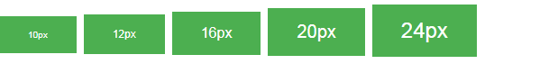

We have a number of CSS (libraries) available that can be used on HTML pages just the way we use normal buttons. We've shown some of the CSS libraries for Buttons used frequently by web developers. This tutorial explains how to use these CSS libraries in practice.
this will give the result:
